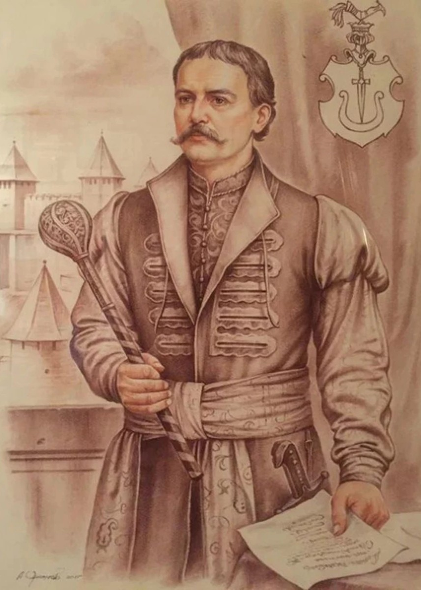
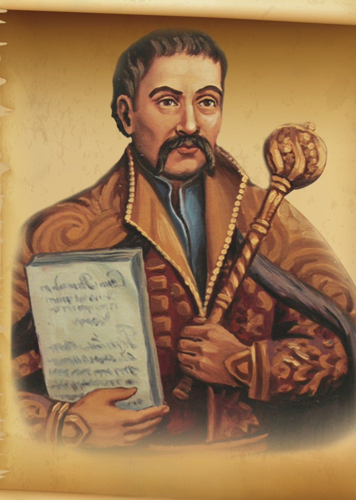
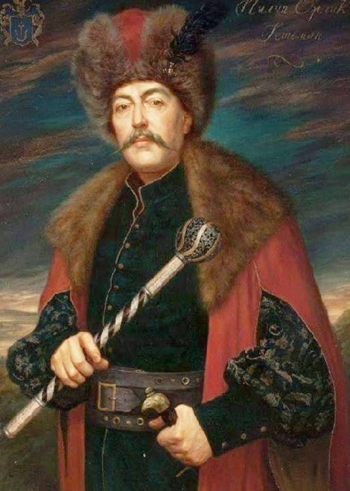
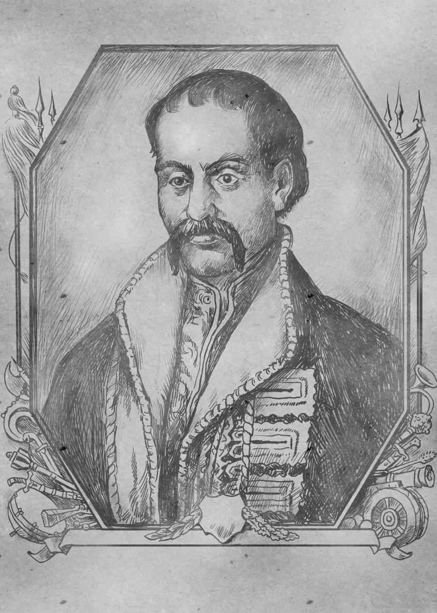

Пилип Орлик – гетьман у вигнанні, сподвижник Івана Мазепи та автор першої української Конституції 1710 року. Цей документ передбачав створення демократичного правління, розподіл влади та гарантії прав козаків. Після поразки Мазепи в битві під Полтавою Орлик продовжував дипломатичну боротьбу за незалежність України, шукаючи підтримки у Швеції, Туреччини та Франції. Він так і не зміг повернутися в Україну, але його ідеї стали важливою віхою в розвитку української політичної думки

